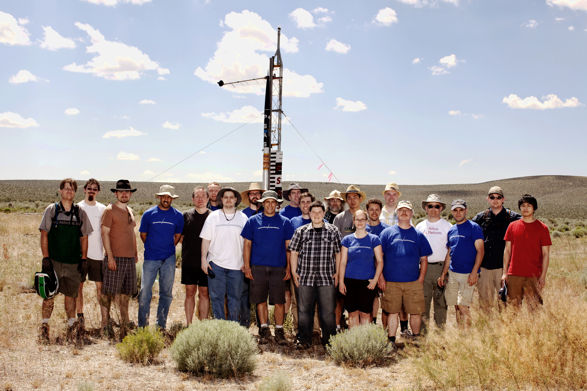
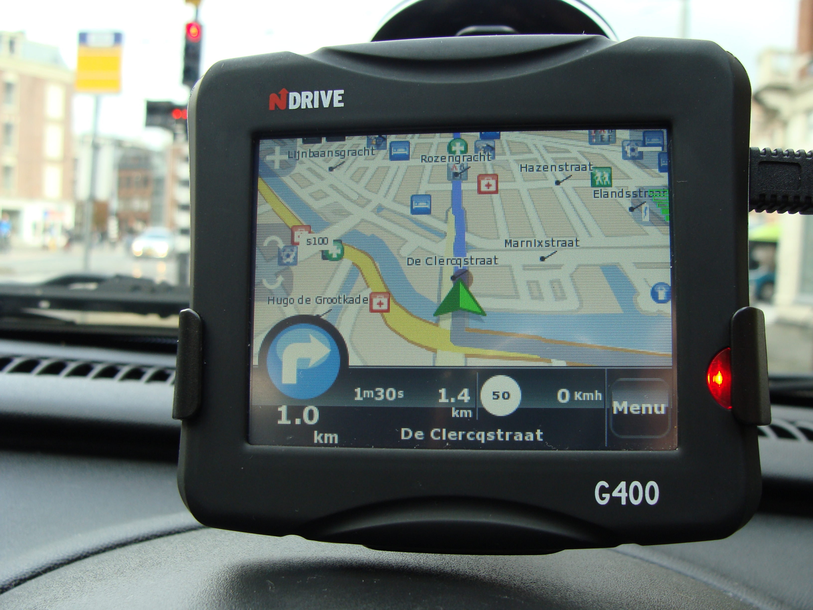
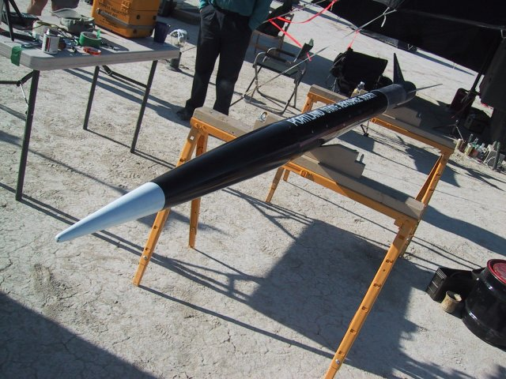
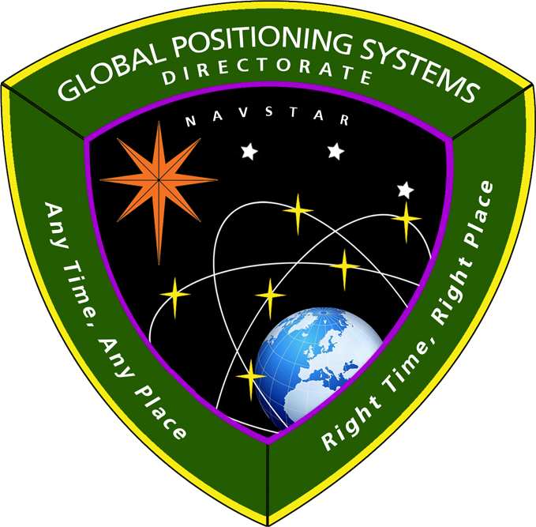

The 20,000km view: How GPS works
Jamey Sharp
wow. many word. so dense
- this is an introduction; there's no quiz
- please hold questions to the end
Portland State Aerospace Society
Launching amateur rockets... For Science!
Commercial GPS receivers:
not built for rockets!


I'm a rocket scientist and you can too
Outline
- Time-of-flight positioning
- Signal vs Noise
- History and Politics
- GPS Modernization
- Data Layer
- Open Hardware and Software
Time-of-flight positioning
take a deep breath
GPS: What is it?
GPS: What isn't it?
- Purely passive, can't track you
- ... of course, your phone might send your GPS track somewhere
GPS: What isn't it?
- No maps
- ... just position: latitude/longitude/altitude/time
How does "trilateration" work?
Oops: Time-of-flight, not distance
- each satellite transmits "the time now is ..."
- receiver gets time-delayed messages:
- 20,000km away: now - 67ms
- 25,000km away: now - 83ms
- 30,000km away: now - 100ms
- 35,000km away: now - 117ms
Theory of relativity
- Special relativity: at 14,000km/hour, clocks run slower by 7.2 microseconds/day
- General relativity: at 20,000km altitude, clocks run faster by 45.9 microseconds/day
Want a clock that seems to run at 10.23MHz?
Run it at 10.2299999954326MHz —IS-GPS-200G
Signal vs Noise
take a deep breath
Nearest GPS satellite:
20,000km straight up
How far is 20,000km?

How far is 20,000km?

How much power does a GPS satellite transmit?
500W
20,000km later...
.0000000000000005W